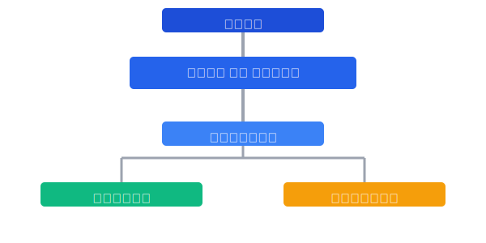
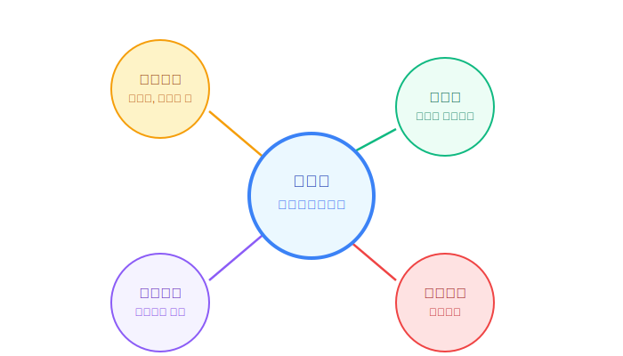

목차
1. 관련규정 개정 및 제도 마련
포천시 드론산업 육성 및 지원에 관한 조례 개정
개정 시기: 2025년 2분기
주관부서: 신성장사업과
기존 조례(제1311호, 2020.12.23)를 확대 개정하여 드론밸리 조성 관련 내용 강화 및 법적 기반 보완
기존 조례 주요 내용
- 드론산업 육성 및 지원 목적
- 시장의 드론산업 육성 책무
- 드론 저변 확대, 창업지원 등 드론 사업 실시
- 드론산업 지원센터 설치·운영
- 드론클러스터 추진단 운영
- 민관 협력체계 구축
추가 개정 내용
- 드론산업 육성 및 지원에 관한 종합계획 수립(5년 단위)
- 드론밸리 조성 및 운영에 관한 사항
- 드론산업 육성 기금 설치 및 운용
- 드론 관련 인력 양성 및 교육 지원 확대
- 주민 참여형 드론 서비스 개발 지원
- 드론 활용 실증 지원 확대
드론 특별 비행구역 지정을 위한 제도적 지원
추진 시기: 2025년 3분기
주관부서: 신성장사업과, 시민안전과
국토교통부 항공정책과와 협의하여 특별 비행구역 지정 추진 및 군 작전구역 조정을 위한 국방부와의 협력체계 구축
조치 내용
- 항공안전법 특례 적용을 위한 중앙부처 협의
- 군사 작전구역 내 드론 비행 허가 특례 마련
- 드론 비행구역 운영 규정 및 안전 관리 지침 수립
- 드론 비행 허가 원스톱 처리 시스템 구축
규제 샌드박스 지정 추진
추진 시기: 2025년 4분기
주관부서: 기획예산과, 신성장사업과, 법무규제개혁팀
드론 관련 규제 완화를 위한 특구 지정 행정안전부 협의 및 무인비행장치 실증사업 특별자유화구역 지정 신청
샌드박스 주요 내용
- 드론 비행 고도 제한 완화
- 야간 및 가시권 밖 비행(BVLOS) 허용
- 드론 활용 택배 서비스 실증 특례
- 드론 활용 영상촬영 규제 완화
기대 효과
- 드론 산업 혁신 생태계 조기 구축
- 선도적 드론 서비스 개발 및 상용화 가속화
- 국내외 드론 기업 및 연구 기관 유치 활성화
- 우수 규제완화 사례의 타 지자체 확산 기반 마련
2. 인력추가 지원
전담 조직 신설 및 전문인력 확보
추진 시기: 2025년 1분기
주관부서: 자치행정과, 신성장사업과
조치 내용
- '드론산업육성팀' 신설 (신성장사업과 소속, 팀장 포함 5명 규모)
- 드론 산업 전문가 2명 특별채용 (민간 전문가 영입)
- 팀 구성:
- 팀장 (행정 5급 1명)
- 사업기획 담당 (행정 6급 1명)
- 기술지원 담당 (드론 전문가 2명)
- 행정지원 담당 (행정 7급 1명)
주요 업무
- 드론산업 육성 기본계획 수립
- 드론산업 진흥 협의체 운영
- 드론 비행구역 관리 및 운영
- 드론 관련 기업 유치 및 지원
관련 부서 인력 보강
추진 시기: 2025년 2분기
주관부서: 자치행정과
조치 내용
- 관련 부서별 드론 담당자 지정
- 안전총괄과: 드론 안전관리 담당 (1명)
- 농업기술센터: 농업용 드론 담당 (1명)
- 관광과: 드론 관광 콘텐츠 담당 (1명)
- 정보통신과: 드론 데이터 관리 담당 (1명)
- 드론 전문교육 이수 지원 (공무원 역량 강화)
- 드론 조종 자격증 취득 지원
- 드론 산업 정책 전문 과정 참여
- 선진 드론 도시 벤치마킹 연수
민관 협력 인력 운영체계 구축
추진 시기: 2025년 2-3분기
주관부서: 신성장사업과, 일자리경제과
조치 내용
- 드론산업 진흥 협의체 사무국 인력 지원
- 사무국장 1명 (전담공무원)
- 행정지원 1명 (기간제 근로자)
- 드론 분야 자문단 구성
- 퇴직 드론 전문가 활용 (5명 내외)
- 군 드론 전문인력 자문위원 위촉 (3명)
- 대학 연구진 참여 (3명)
- 드론 서포터즈단 운영
- 지역 주민 및 청년 30명 내외
- 드론 행사 지원 및 홍보 활동
드론산업 육성 조직도

드론산업육성팀
- 드론산업 정책 수립 및 실행
- 드론 인프라 구축 및 관리
- 예산 확보 및 집행 관리
- 대외 협력 총괄
민관협력체계
- 드론산업 진흥 협의체 운영
- 드론 기업협의회 지원
- 민간 전문 자문단 활용
- 시민 참여 프로그램 운영
관련부서협의체
- 부서간 업무 조정 및 협력
- 분야별 드론 활용 정책 수립
- 융합형 드론 서비스 개발
- 행정 서비스 효율화 추진
3. 예산확보ㆍ지원
시 자체 예산 편성
추진 시기: 2025년 1-2분기
주관부서: 기획예산과, 신성장사업과
조치 내용
- 2025년 제1회 추경예산에 초기 사업비 15억원 반영
- 2026년 본예산부터 연차별 증액 계획 수립
- 2026년: 30억원
- 2027년: 50억원
- 단계별 예산 효율화 방안 적용
- 1단계: 기존 행사 예산과 유휴 공공시설 활용
- 2단계: 성과 기반 예산 배분으로 재정 리스크 최소화
- 3단계: 민간 투자 유치로 공공예산 의존도 감소
국비 및 도비 확보 추진
추진 시기: 2025년 2-4분기
주관부서: 기획예산과, 미래산업과
조치 내용
- 중앙부처 공모사업 지원 신청
- 산업통상자원부 '드론산업 육성사업' 공모 신청
- 국토교통부 '드론 실증도시' 지정 추진
- 과학기술정보통신부 'ICT 규제 샌드박스' 사업 참여
- 경기도 지원 예산 확보
- 경기도 '미래성장동력산업 육성' 예산 지원 요청
- 경기북부 균형발전 사업 연계 추진
- 국비 확보를 위한 전략적 대응
- 국회의원 및 중앙부처 설득 자료 마련
- 정부 정책 방향과 연계한 사업 기획
민간 투자 유치 기반 마련
추진 시기: 2025년 3분기-2026년
주관부서: 미래산업과, 세무과
조치 내용
- 드론산업 투자설명회 개최 (연 2회)
- 국내 드론 관련 기업 및 투자자 대상
- 포천 드론밸리 비전 및 투자 이점 홍보
- 민간기업 투자 인센티브 제도 마련
- 세제 혜택: 취득세, 재산세, 등록면허세 감면
- 임대료 지원: 입주 기업 사무공간 임대료 지원
- 고용 지원: 인력 채용 및 교육 보조금 지원
- 민관협력 투자 모델 개발
- 민관 공동 투자 프로젝트 기획
- 크라우드 펀딩 플랫폼을 통한 투자 유치
연도별 예산 계획 (2025-2030)
| 연도 | 시 자체 예산 | 국비 및 도비 | 민간 투자 | 합계 |
|---|---|---|---|---|
| 2025년 | 15억원 | 5억원 | - | 20억원 |
| 2026년 | 30억원 | 20억원 | 10억원 | 60억원 |
| 2027년 | 50억원 | 40억원 | 30억원 | 120억원 |
| 2028년 | 50억원 | 50억원 | 70억원 | 170억원 |
| 2029년 | 50억원 | 60억원 | 120억원 | 230억원 |
| 2030년 | 50억원 | 60억원 | 160억원 | 270억원 |
| 합계 | 245억원 | 235억원 | 390억원 | 870억원 |
※ 상기 예산 계획은 사업 진행 상황 및 성과에 따라 조정될 수 있으며, 국비 및 도비는 확보 노력에 따라 변동 가능
4. 업무프로세스 조정
드론산업 전담 행정 프로세스 구축
추진 시기: 2025년 2-3분기
주관부서: 자치행정과, 신성장사업과
조치 내용
- 드론 관련 사업 인허가 원스톱 서비스 체계 마련
- 드론산업육성팀 내 인허가 전담 창구 설치
- 부서간 협업 처리 시스템 구축
- 인허가 처리 기간 단축 (기존 대비 50% 이상)
- 부서 간 칸막이 해소를 위한 협업 시스템 구축
- 드론 관련 사업 부서간 정보 공유 플랫폼 구축
- 부서 합동 워크숍 및 정례회의 개최 (월 1회)
- 공동 사업 기획 및 예산 협의 체계 마련
성과 관리 및 환류 체계 마련
추진 시기: 2025년 3분기
주관부서: 기획예산과, 미래산업과
조치 내용
- 드론산업 발전 지표 개발 및 모니터링 시스템 구축
- 핵심 성과 지표(KPI) 선정 및 관리
- 데이터 기반 성과 측정 체계 구축
- 분기별 모니터링 및 성과 분석
- 반기별 성과 평가 및 피드백 체계 마련
- 내부 평가: 부서별 성과 측정 및 점검
- 외부 평가: 전문가 및 시민 참여 평가
- 피드백 반영: 평가 결과 기반 사업 개선
시민 참여 채널 구축
추진 시기: 2025년 3-4분기
주관부서: 신성장사업과, 홍보담당관
조치 내용
- 드론산업 발전 아이디어 제안 플랫폼 운영
- 온라인 아이디어 제안 시스템 구축
- 우수 아이디어 시상 및 사업화 지원
- 시민 참여형 실험실(리빙랩) 운영
- 주민 의견수렴 정례화
- 분기별 공청회 및 정책 설명회 개최
- 온라인 설문조사 및 여론 수렴
- 주민자치위원회 연계 의견 수렴
기대 효과
- 시민 공감대 형성 및 정책 수용성 증대
- 실수요자 중심의 드론 서비스 개발
- 지역 문제 해결형 드론 활용 모델 발굴
- 시민의 정책 참여 활성화 및 만족도 제고
- 드론 산업 발전의 지역 내 사회적 합의 도출
5. 관련기관 협의
중앙부처 협력체계 구축
추진 시기: 2025년 1-2분기
주관부서: 기획예산과, 미래산업과
협력 대상 부처
- 국토교통부 (항공정책과, 드론관리과)
- 산업통상자원부 (산업혁신과)
- 과학기술정보통신부 (미래전략기획과)
- 행정안전부 (지역발전정책과)
협력 내용
- 정기적 정책 협의회 개최 (분기별 1회)
- 중앙부처 드론 관련 실증사업 유치
- 규제개선 협력 및 특례 적용 요청
- 국비 지원 사업 발굴 및 협의
군부대 협력 강화
추진 시기: 2025년 2-3분기
주관부서: 안전총괄과, 미래산업과
협력 내용
- 관내 주둔 군부대와 드론 활용 및 훈련장 공동사용 MOU 체결
- 군 훈련장 시설 공동 활용 방안 협의
- 비행금지구역 내 드론 비행 특례 마련
- 군-민간 드론 기술 교류
- 전역 예정 장병 대상 드론 교육 및 취업 연계 프로그램 개발
- 전역 예정 장병 대상 드론 기술 교육
- 드론 관련 기업 취업 연계
- 창업 지원 및 컨설팅 제공
교육기관 및 연구기관 연계
추진 시기: 2025년 2-4분기
주관부서: 신성장사업과, 교육정책과
협력 기관
- 지역 내 교육기관
- 포천시 관내 초중고등학교
- 경복대학교, 대진대학교 등 인근 대학
- 폴리텍대학 등 기술교육기관
- 경기북부 소재 연구기관
- 경기연구원 북부연구센터
- 항공우주연구원 분원
- 민간 드론 기술 연구소
협력 내용
- 지역 내 교육기관과 드론 교육과정 개발 협력
- 산학협력을 통한 드론 전문인력 양성
- 공동 R&D 프로젝트 발굴 및 추진
- 연구 인프라 공동 활용 체계 구축
드론산업 협력 네트워크 구조

중앙부처 협력
규제 샌드박스 지정, 국가 드론사업 연계, 정책 협의 및 조정, 예산 지원 등
군부대 협력
군 시설 공동 활용, 전역 장병 드론 교육, 비행 특례 적용, 국방드론 민간 활용 등
연구기관 협력
공동 R&D 프로젝트, 기술 개발 및 이전, 연구 인프라 공유, 성과 확산 등
교육기관 협력
드론 전문인력 양성, 교육 커리큘럼 개발, 산학협력 프로젝트, 평생교육 등
6. 기타
민간 투자 유치 활성화
추진 시기: 2025년 4분기-2026년
주관부서: 신성장사업과, 기업지원과
조치 내용
- 드론산업 투자설명회 정례화 (연 2회)
- 투자자 대상 포천 드론밸리 투어 프로그램 운영
- 민간 투자 인센티브 패키지 개발
- 국내외 드론 기업 대상 투자 유치 마케팅
홍보 및 마케팅 강화
추진 시기: 2025년 3분기-2026년
주관부서: 홍보담당관, 미래산업과
조치 내용
- 포천 드론밸리 브랜드 개발 및 통합 마케팅 전략 수립
- 온·오프라인 홍보 채널 구축 및 운영
- 웹사이트, SNS, 홍보영상 등 온라인 콘텐츠 제작
- 언론 홍보, 홍보물 제작 등 오프라인 마케팅
- 국내외 드론 관련 전시회, 컨퍼런스 참가 및 유치
- 드론 성공 사례 및 혁신 스토리 발굴·홍보
지식재산권 창출 및 보호 지원
추진 시기: 2025년 4분기-2026년
주관부서: 신성장사업과, 자치행정과
조치 내용
- 드론 관련 특허, 실용신안 등 지식재산권 창출 지원
- IP 전략 컨설팅 지원
- 특허 출원 비용 지원
- IP 역량 강화 교육 운영
- 기술 보호 및 상용화를 위한 법률 자문 서비스 제공
- 법률 상담 및 분쟁 조정 지원
- 기술이전 및 라이센싱 자문
- 사업화 전략 컨설팅
단계별 예산 효율화 방안
| 단계 | 소요예산 | 주요 효율화 방안 |
|---|---|---|
| 1단계 (최소 예산 투입) |
약 3억원 이내 |
|
| 2단계 (성과 기반 예산 확대) |
약 7억원 이내 |
|
| 3단계 (민간 투자 유치) |
공공예산 최소화 |
|
※ 각 단계별 가시적 성과 창출 후 다음 단계 예산을 결정하는 '성과 기반 예산 배분' 방식을 통해 재정 리스크 최소화